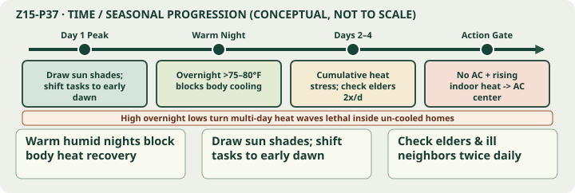

Z15-P37 · Disaster scenarios · New manuscript
Act early on Excessive Heat Warnings and high overnight low temperatures
Recognize why consecutive hot days paired with warm humid nights overwhelm human recovery and trigger fatal heat waves.
When it applies · Summer heat domes, humid Upper Midwest heat waves, and urban heat islands.
Equipment · Live NWS Heat Advisory/Excessive Heat Warning alerts, indoor thermometer, hydration plan, and cooling-center list.

Actions
- Monitor both daytime Heat Index (temperature + humidity) AND overnight minimum temperatures—when nighttime air stays above 75–80°F in un-air-conditioned homes, bodies never shed stored daytime heat, causing cumulative organ stress across days 2 through 5 of a heat wave.[D09, E08]
- Reschedule outdoor work, athletics, and errands strictly to early morning before peak sun, draw shades/blinds on sun-facing windows early, avoid running home ovens, wear light loose breathable clothes, and hydrate steadily with safe water before thirst lags.[D09, E08, E19]
- Check TWICE DAILY on older adults, infants, pregnant individuals, outdoor workers, and neighbors taking heat-sensitive medications (such as diuretics or certain psychiatric/heart drugs).[D09, T10]
Failure recognition · Ignoring day three of a humid heat wave in an upstairs apartment because daytime air dropped two degrees while indoor walls radiate 92°F heat all night.[D09, E08]
Verify · Confirm live NWS heat alerts monitored, sun-facing blinds shut early, exertion shifted to dawn, and vulnerable neighbors checked twice daily.[D09]
Stop or change course · Indoor living temperatures climbing into dangerous heat stress without working AC triggers immediate relocation to an air-conditioned cooling center.[D09, U17]
Evidence and editorial notes
- D09 · FEMA / Ready.gov · Extreme Heat (current web edition)
- Section: Extreme Heat Waves, Heat Domes, and Power-Outage Cooling Plans · Conditions: Prolonged heat advisories, excessive heat warnings, and grid-strain brownouts
Support: Identify public cooling centers and air-conditioned backup locations ahead of heat waves, check twice daily on older adults/children/chronically ill neighbors, block solar gain through windows, never leave people or pets in parked vehicles, and activate 911 immediately for heat stroke.
Limitations: Electric fans alone do not prevent heat illness when indoor air temperatures climb into extreme heat ranges (above ~95°F) with high humidity. · Conflicting evidence: None; aligns with CDC-HEAT, E08, E19, and T09.
Editorial note: Anchors urban/rural heat-wave resilience and vulnerable-neighbor checks. · Specialist reviewer: Public health and emergency medicine
Primary source · checked 2026-11-24 - E08 · CDC · About Heat and Your Health (current web edition)
- Section: Protect yourself from heat · Conditions: Outdoor activity in hot conditions
Support: Limit exertion in hot periods, take breaks in cooler places and monitor for illness.
Limitations: High humidity reduces sweat evaporation and raises heat strain at lower air temperatures. · Conflicting evidence: None; aligns with NWS-HEAT and NIOSH-H.
Editorial note: Anchors shade, pacing, and hot-weather shelter selection. · Specialist reviewer: Heat illness and emergency medicine
Primary source · checked 2026-11-24 - E19 · NWS · Heat Safety (current web edition)
- Section: Heat Safety > Heat Index and Shade · Conditions: High temperature and humidity outdoors
Support: Shade lowers radiant solar heat load while airflow aids evaporative cooling; enclosed unventilated tents trap solar heat far above ambient air temperature.
Limitations: High ambient humidity limits evaporative cooling even in shade. · Conflicting evidence: None; aligns with CDC-HEAT and READY-HEAT.
Editorial note: Drives warm-weather tarp/shade configuration and ventilation cards. · Specialist reviewer: Heat safety and shelter design
Primary source · checked 2026-11-24 - T10 · FEMA / Ready.gov · People with Disabilities (current web edition)
- Section: People with Disabilities > Make a Plan and Build a Kit · Conditions: Individuals with mobility, sensory, medical, or power-dependent access and functional needs
Support: Build a personal support network, plan accessible evacuation transport, register voluntarily with local emergency registries where available, and plan backup power and spare supplies for medical devices, medications, and service animals.
Limitations: Local registry availability and utility priority-restoration policies vary by jurisdiction. · Conflicting evidence: None; extends generic preparedness plans to accessible requirements.
Editorial note: Directly addresses Z01 accessible emergency planning requirement. · Specialist reviewer: Accessible emergency management and disability preparedness
Primary source · checked 2026-11-24 - U17 · FEMA / Ready.gov · Evacuation (current web edition)
- Section: Household Evacuation Thresholds When Utilities Fail · Conditions: Uninhabitable indoor temperatures, sewage backup, persistent CO alarm, or structural/utility hazard
Support: Establish clear pre-agreed exit triggers to relocate to a warming center, hotel, or relatives BEFORE indoor freezing, carbon monoxide alarms, medical-device battery exhaustion, or impassable blizzard roads trap occupants.
Limitations: Waiting until indoor pipes burst or batteries hit zero removes safe travel options. · Conflicting evidence: None; aligns with T13 and E14.
Editorial note: Defines objective household abandonment thresholds in Z13. · Specialist reviewer: Emergency management and cold-weather operations
Primary source · checked 2026-11-24
Source lineage · NWS Heat Safety and FEMA Extreme Heat; new manuscript · Classification · New manuscript.